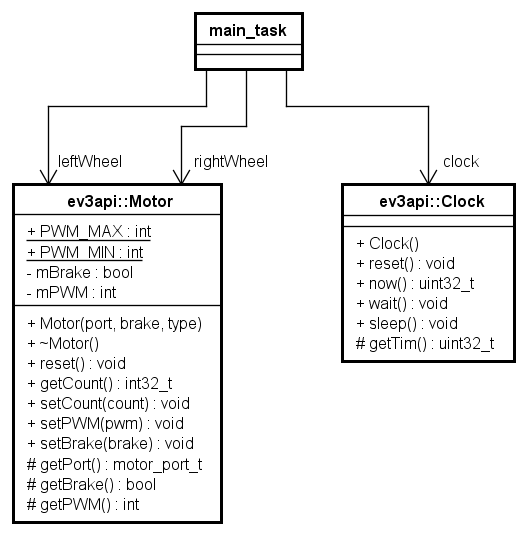
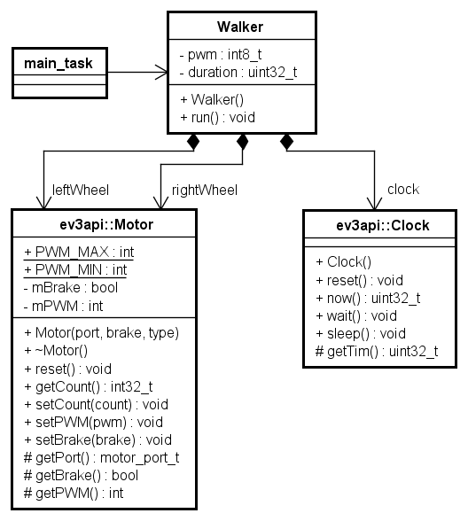
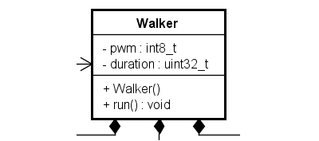
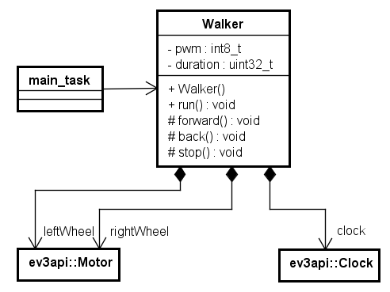

void main_task(intptr_t unused) {
Motor leftWheel(PORT_C);
Motor rightWheel(PORT_B);
Clock clock;
const int8_t pwm = (Motor::PWM_MAX) / 6;
const uint32_t duration = 2000;
init_f(__FILE__);
while(1) {
msg_f("Forwarding...", 1);
leftWheel.setPWM(pwm);
rightWheel.setPWM(pwm);
clock.sleep(duration);要素技術とモデルを開発に使おう: コードとモデル図を対応づけてみよう
ETロボコン実行委員会er-info@etrobo.jp
3.0, 2020-07-05 12:06:08
2020年用
sample00（ウォーカー）を動かしてみよう
sample00 をビルドして動かしてみましょう。
どんな動きをするプログラムでしょうか。
リスト 1.
sample00/app.cpp から抜粋リスト 2.
sample00/app.cpp から抜粋（続き）msg_f("Backwarding...", 1);
leftWheel.setPWM(-pwm);
rightWheel.setPWM(-pwm);
clock.sleep(duration);
// 左ボタンを長押し、それを捕捉する
if (ev3_button_is_pressed(LEFT_BUTTON)) {
break;
}
}
msg_f("Stopped.", 1);
leftWheel.stop();
rightWheel.stop();
while(ev3_button_is_pressed(LEFT_BUTTON)) {
;
}
ext_tsk();
}動かしてみましょう
ビルドをして、シミュレータを動かしてみましょう。
~/etrobo:$
~/etrobo:$ make app=sample00 sim upこれでシミュレータが上がります。２回目以降は
make sim up
で大丈夫です。
ロボットは、次のような動きをします。
- 2000ms(=2秒)ごとに、前進と後退を繰り返す
- 左ボタンをしばらく押し続けていると、そのうち押されたことが捕捉され、停止する
シミュレータ上でのロボットのボタンを押すと止めることができます。
プログラムを見てみましょう
以下のようなポイントを押さえながら、プログラムを見てみましょう
- この動作をさせるために必要な要素は何で、どのように使われているでしょうか
- 前進する、後退するという処理はどれですか
- ボタンが押されるという処理はどれですか
- どうやってプログラムは終わっているでしょう
このプログラムで使用している要素
このプログラムでは大きく「モーター」、「時計（クロック）」という要素を使っています。 モーターを動かすことで前進したり、後退したりしています。 また、時計を使って2000msec(=2秒)を計測しています。 これらの要素を使うための準備をしているところを見てみましょう。
void main_task(intptr_t unused) {
Motor leftWheel(PORT_C);
Motor rightWheel(PORT_B);
Clock clock;ここでMotorとClockという要素を使うための変数を定義しています。
Motor leftWheel(PORT_C);
はMotor要素を具体的にleftWheel（左車輪）という名前（変数）で使用することを意味しています。 (PORT_C)はPORT_Cにつながったモーターであることを指定しています。同様に
Motor rightWheel(PORT_B);
はPORT_BにつながったモーターをrightWheel(右車輪)として使用することになります。
また、
Clock clock;
はClockという要素をclockという名前で使用することを示しています。
後でも出てきますが、ここで出てきたMotorやClockはクラス、それを具体的に扱えるようにしたleftWheelやrightWheel、clockはインスタンスまたはオブジェクトと呼びます。 leftWheel、rightWheelはどちらもMotorクラスのインスタンス（オブジェクト）であり、clockはClockクラスのインスタンス（オブジェクト）というような言い方をします
要素の読み込み
では、このMotorというのはどこからきているのでしょうか。 このMotorという要素は他のプログラムでも共通で使用できるライブラリとしてETロボコン実行委員会から提供しているものです。 この定義を読み込んでいる部分が
#include "Motor.h"
#include "Clock.h"となります。#includeというのはこの部分に指定されたファイルを読み込むという命令です。
クラスとメソッド
では、読み込まれる要素を定義しているファイル（ヘッダーファイル）を少し見てみましょう。
/**
* EV3 モータクラス
*/
class Motor
{
public:
friend class Steering;中略
/**
* コンストラクタ
* @param port モータポート番号
* @param brake true:ブレーキモード/false:フロートモード
* @param type モータタイプ
* @return -
*/
explicit Motor(ePortM port, bool brake = true, motor_type_t type = LARGE_MOTOR);classというのは要素を宣言するためのものです（クラスと呼びます）。ここではMotorというクラスを 定義しています。 そして、39行目の部分が先ほどのleftWheel/rightWheelを宣言した際にポート番号を指定した部分と 関連するところです。 クラスが提供している操作をそのクラスの「メソッド」と呼びます。さらにメソッドのうち クラス名と 同じ名前を持つメソッドはそのクラスのコンストラクタと呼ばれた特殊なものです。 詳細は省きますが、先ほどのleftWheel,rightWheelを定義した場所で、ポートを指定した初期化が 行われています。
Clockも同様の定義を持っていますので、Clock.hを確認してみましょう。
固定値の定義
次に以下の定義について説明します。
const int8_t pwm = (Motor::PWM_MAX) / 6;
const uint32_t duration = 2000;ここではそのあとで使用する固定の値を定義しています。例えばこのサンプルでは前進後退を切り替える 時間を2000msecとしています。 この値を直接プログラムの中に数字で書いても良いのですが、あとでこの値を3000msecにしたいと 思った場合、使っている場所全て（この例では27行目と33行目）に書き換えが必要となります。 また、プログラムを読んだときに2000が何を意味しているかわからなくなることもあります。このように プログラム内で使用する固定値は直接書かず、書き換えできない変数として定義すると良いでしょう。 「const」という定義はこの変数が書き換えできないということを示します。
やってみよう
pwmやdurationの値を変えて、動きがどう変わるかやってみましょう
中心となる処理
このプログラムの中心となるのは以下の部分です。
while(1) {
msg_f("Forwarding...", 1);
leftWheel.setPWM(pwm);
rightWheel.setPWM(pwm);
clock.sleep(duration);
// end::main_task_1[]
// tag::main_task_2[]
msg_f("Backwarding...", 1);
leftWheel.setPWM(-pwm);
rightWheel.setPWM(-pwm);
clock.sleep(duration);
// 左ボタンを長押し、それを捕捉する
if (ev3_button_is_pressed(LEFT_BUTTON)) {
break;
}
}順に説明します。
前進する
以下の部分で左車輪、右車輪に対して前進を行う指示をしています。
leftWheel.setPWM(pwm);
rightWheel.setPWM(pwm);leftWheel.setPWM(pwm)はleftWheelで示されるモーター（つまりPORT_Cにつながったモーター）に 対してpwmをPWM値として設定しています。組み方にもよりますが、今回の組み方では正の値を設定すると 前進を行います。 左車輪と右車輪に同じ値を設定しているので、ロボットは前進することになります。
| ロボットは設定されたPWM値を覚えているので、明示的に停止させない限り進み続けることに注意してください。 |
時間を待つ（指定時間処理を待たせる）
今回のサンプルでは、前進をさせて2000msec=２秒間経ってから後進を行います。時間によって処理を 切り替えるやり方はいくつかありますが、ここでは「２秒間何も処理しないで待つ」というやり方を 取っています。それが以下の部分です。
clock.sleep(duration);時間に関する処理を持つClockクラスの操作であるsleep()というメソッドを呼び出しています。 sleepは指定された時間（単位はmsec)処理を停止し、時間が立つと処理を進めます。 このサンプルでは2秒処理を止めています。処理を止めている間もモーターは設定した値にしたがって 動作を続けるため、前進を続けることになります。
| sleep()で待っている間、処理が停止されているため、その間は左ボタンの受付もされないことに注意が必要です。 |
後進する
前進と後進はモーターに設定する値を変えることで実現しています。
leftWheel.setPWM(-pwm);
rightWheel.setPWM(-pwm);
clock.sleep(duration);setPWMで設定する値を-pwmのようにマイナスの値を設定することで、逆方向にモーターを動作させるように なっています。また、前進の時と同じようにsleep()で2秒を待たせています。
やってみよう
setPWMに設定する値の符号を変えてみて、その場で右回り、左回りを2秒毎に切り替えてみましょう。
繰り返し
前進、後進の繰り返しを行っているのが以下のwhile文です。繰り返しはループとも呼ばれます。
while(1) {whileは()内で指定された式、値がfalse(数字では0)以外の場合、繰り返しを行います。while(1)は 無条件で繰り返しを行う場合によく使われる記述方法です。繰り返しの範囲は { }で示されるブロックになります。このサンプルでは以下までとなります。
}この繰り返しにより、前進後進がずっと繰り返されます。
ボタンの受付とループからの脱出
while(1)では永遠に処理が繰り返されてしまうため、左ボタンを押した際にループを抜けてモーターを 止める処理が以下です。
if (ev3_button_is_pressed(LEFT_BUTTON)) {
break;
}if文では()内の条件がtrue(つまり0以外)になった場合、続くブロック内の処理を行います。
ev_button_is_pressed(LEFT_BUTTON)
は本体の左ボタンが押された場合にtrueとなる関数です。ボタンが押された場合、ブロック内の
break;
が実行されます。breakはループを抜けるための命令です。23行目のwhile(1)は永遠に繰り返される ループですが、ボタンが押された場合はこのループを抜けて、41行目からの処理に移ります。
モーターの停止
左ボタンを押して、ループを脱出したらモーターを止めます。また、今度はボタンが離されるまでループが 続きます。
leftWheel.stop();
rightWheel.stop();
while(ev3_button_is_pressed(LEFT_BUTTON)) {
;
}44行目のwhile()によって、何もしないループが繰り返されます。
タスクの終了
これまでの処理はタスクという実行単位で行われています。処理が終わったので、タスクの動作を終了します。
ext_tsk();プログラムをモデル（図面）にしてみる
これまで見てきたプログラムをモデル（図面）として表現してみましょう。今回のプログラムは小さいので全体を 理解するのは難しくありません。しかし、実際のプログラムはもっと大きくなります。その場合、プログラム だけだと全体を俯瞰することが難しくなっていきます。モデルとして図にすることで、プログラムが大きくなっても 全体像を把握しやすくなります。
モデルの記述には主に
- 機能の側面
- 構造の側面
- 振舞いの側面
があります。ここでは構造のモデルについて説明します。
構造のモデル（オブジェクト図）1
構造のモデルは、使われている要素と、その要素間の繋がりを表現します。 今回のプログラムでは要素として「モーター」と「時計」、そしてそれを使っているmain_task()があります。 オブジェクト図では使用している具体的なオブジェクトとその関係を示したものです。main_task()はオブジェクトでは ありませんが、関係を示すためにオブジェクトとして表現することにします。

図 1.
sample00 のオブジェクト図オブジェクト図ではオブジェクトを四角で、オブジェクトの名前には下線を引きます（これにより後で出てくる クラス図と区別できます）。 オブジェクト間に引かれている線は「リンク」です。オブジェクト間での呼び出しなどの繋がりを示しています。 この図により、このプログラムで使われている要素を把握することができます。
構造のモデル（オブジェクト図)２
このオブジェクト図をもう少し手直しします。leftWheel、rightWheel、clockはMotorクラスやClockクラスの オブジェクトです。これを明確にするため、オブジェクト名の横にそのクラス名を書くことができます。

図 2.
sample00 のオブジェクト図（クラスと関連づけ後）このように、「オブジェクト名:クラス名」という書き方をします。 これにより、leftWheelとrightWheelがどちらもMotorクラスのオブジェクトであることがわかります。
オブジェクト図は具体的な要素を表しているので、比較的書きやすい図でもあります。 モデリング初級者はオブジェクトを洗い出してみることから始めると良いでしょう。
構造のモデル（クラス図）
クラス図はオブジェクトではなく、クラスのレベルで要素とその関係を示した図になります。今回のプログラムを クラス図にしてみたものが以下です。

図 3.
sample00 のクラス図クラス図でもクラス間の関係を線で表現します。ただし、クラス図での線は「関連」と呼びます。 関連の端には「関連端名」を付けます。この図ではmain_taskからモータークラスへの関連端名として leftWheel、rightWheelという「ロール名」が付けられています。 同じクラスに対して異なる役割を持って使っているということが読み取れます。 オブジェクト図とも比較してみましょう。
クラス図ではそのクラスが持つ属性やメソッドを表現できます。これにより各要素がどのような役割を 持っているかが分かりやすくなります。 プログラムと対応させる図としてはこうしたクラス図を使います。
クラス図を読み取ろう
では、一度プログラムを忘れてこのクラス図を考えてみましょう。
- どんなクラスを使っているかわかりますか
- どんなクラスのインスタンス（オブジェクト）を使っているかわかりますか
- どんなことがやりたいシステムかわかりますか
- どんな処理をするシステムかわかりますか
こうしてみると、これだけではMotor クラスと Clock クラスを使っているアプリケーションである というほかは、どのようなことをやりたいのかが分かりません。
もしかしたら時間になったらモーターを動かして金魚に餌をあげるというアプリケーションかもしれません
このように、図面でどのようなアプリケーションかがわからないということは、役割がきちんと分担されていなかったり、それにより一部の要素に役割が集中していることが考えられます。 こうした作り方だと、プログラムとして分かりにくかったり、修正が難しくなります。構造の図により、役割が適切に分割できているかどうかを確認しましょう。
クラス図を見直す
このプログラムでは決まった走行（前進・後退を繰り返す）をロボットにさせたいのに、 sample00 には
そのことがわかるクラスがありません。
このロボットがやる仕事を担当するクラスを作って、仕事の担当者としての名前をつけてみましょう。
ここでは、前後に走行する役割をもつ「Walker」というクラスを作ることにしましょう。

図 4.
sample01 のクラス図Walkerを定義するにあたり、main_taskで持っていたpwmとdurationをWalkerクラスの属性としました。 このように必要なデータを表現することはそのクラスの持つ役割を明確にすることに繋がります。 また、このWalkerが備える操作としてrun()を定義します。main_taskはWalkerクラスのオブジェクトに対して run()を呼び出すことで全体の動作を行わせることになります。 また、Motor、ClockはWalkerができた時に一緒に使われるので、コンポジション（黒菱形の表記）を使っています。
Walkerというクラスを定義したことで、ロボットを動かすという意味が明確になりました。金魚の餌やりアプリケーションであればどんな名前のクラスを用意すると良いでしょうか？
sample01のコードを作成する
モデル図に合わせて、コードを変更しましょう。
-
サンプルコードの
sample00ディレクトリをそっくりコピーしてsample01ディレクトリを作りましょう -
ファイルは分割しないで、
app.cppの中にWalkerクラスを作成しましょう -
クラス図に従って
Walkerクラスを作成します -
Walkerクラスのrunメソッドにmain_taskの処理を移動します -
main_taskはWalkerクラスのインスタンスの作成とrunメソッドの呼び出しを担当します
作成したコードは次ページ以降に掲載してあります。
コードが作成できたら、ビルドして、動作を確認しましょう。コンパイルする対象のディレクトリが変わるので、再度appでディレクトリを指定する点に注意しましょう。
~/etrobo:$ make app=sample01 sim upこちらもこの後は
make sim up
だけで起動できます。
リスト 3.
sample01/app.cpp （その１）#include "app.h"
#include "util.h"
#include "Motor.h"
#include "Clock.h"
using namespace ev3api;
class Walker {
public:
Walker();
void run();
private:
Motor leftWheel; (1)
Motor rightWheel; (1)
Clock clock; (1)
const int8_t pwm = (Motor::PWM_MAX) / 6;
const uint32_t duration = 2000;
};| 1 | Motor クラスと Clock クラスのインスタンスは、 Walker のインスタンスと共に作成・破棄する |
リスト 4.
sample01/app.cpp （その２）Walker::Walker():
leftWheel(PORT_C), rightWheel(PORT_B) {
}
void Walker::run() {
init_f(__FILE__);
while(1) {
msg_f("Forwarding...", 1);
leftWheel.setPWM(pwm);
rightWheel.setPWM(pwm);
clock.sleep(duration);
msg_f("Backwarding...", 1);
leftWheel.setPWM(-pwm);
rightWheel.setPWM(-pwm);
clock.sleep(duration);
// 左ボタンを長押し、それを捕捉する
if (ev3_button_is_pressed(LEFT_BUTTON)) {
break;
}
}
msg_f("Stopped.", 1);
leftWheel.stop();
rightWheel.stop();
while(ev3_button_is_pressed(LEFT_BUTTON)) {
;
}
}リスト 5.
sample01/app.cpp （その３）void main_task(intptr_t unused) {
Walker walker; (1)
walker.run(); (2)
ext_tsk();
}| 1 | Walker クラスのインスタンスを作成 |
| 2 | run メソッドを実行 |
ここまでのまとめ
sample01 のコードとモデル図を作成しました。
この演習から何が言えるでしょうか。
ロボットがやりたいことを担当するクラスを追加しました
- 図やコードを読んだ時に、何がしたいのかわかるようになりました
- やりたいことに「名前」がつきました
Walkerクラスのrunメソッドに処理を走行の詳細を閉じ込めることができました
main_taskはWalkerクラスを使うだけになりましたクラス図を変更し、それに合わせてコードを作成しました
- クラス図とコードが対応していて、どちらで検討しても他方でも辻褄が合うようになりました
Walker クラスを別ファイルに分割してみよう:sample01 では、演習を簡便に済ませるために、 app.c ファイルの中に Walker クラスを作りました。
さらに進めて、 Walker クラスを別ファイルに分割した場合のサンプル sample01_01 を用意してあります。参考にしてみてください。
Walkerクラスの課題を考えよう
|
この節は、技術教育の中では紹介だけにします。演習時間に余裕があるときに実施してください。 |
sample01 では、決まった走行（前進・後退を繰り返す）をロボットにさせるために、その動作を担当する Walker クラスを作成し、決まった走行をするという動作を担当する run メソッドを用意しました。
それでは、 sample01 のクラス図とコードをもう一度よく見てみましょう。決まった走行としてやりたかったこと（前進・後退を繰り返す）がわかるでしょうか。

図 5.
sample01 のクラス図（ Walker クラス部分の抜粋）このクラス図を見ても、「前進する」「後退する」といった動作があるとは分からないですね。
リスト 6.
sample01/app.cpp （ run メソッドの冒頭部分の抜粋）void Walker::run() {
init_f(__FILE__);
while(1) {
msg_f("Forwarding...", 1);
leftWheel.setPWM(pwm);
rightWheel.setPWM(pwm);
clock.sleep(duration);
msg_f("Backwarding...", 1);
leftWheel.setPWM(-pwm);
rightWheel.setPWM(-pwm);
clock.sleep(duration);
// 左ボタンを長押し、それを捕捉するこのコードを見ても、メッセージはあるものの、「前進する」「後退する」といった動作がどの部分なのかわからないですね。
Walkerクラスに操作を追加する
sample01 の Walker クラスでは、「前進する」「後退する」といった動作がわかりませんでした。
動作がわかるようにするには、該当する処理を「前進する」など 動作の名前 で呼ぶことができればよい、つまり メソッド にすればよいですね。
sample01 のクラス図を元に、 Walker クラスに forward メソッドなどを追加した sample02 のクラス図を作成します。
下図は、 Motor クラスと Clock クラスの詳細を非表示にしてあります。モデリングツールを使うと必要に応じてこうした表示の設定が容易にできます。

図 6.
sample02 のクラス図この図では
- 「前進する」forwardメソッド、「後退する」backメソッド、「停止する」stopメソッドを用意しました。
- これらのメソッドの先頭についている「#」はこのメソッドがprotectedという可視性であることを示します。 protected なメソッドは Walker クラスの外部からは呼び出せませんが、Walker クラスを継承したクラ スは利用できるメソッドになります
sample02のコードを作成する
モデル図に合わせて、コードを変更しましょう。
-
サンプルコードの
sample01ディレクトリをそっくりコピーしてsample02ディレクトリを作りましょう -
ファイルは分割しないで、
app.cppの中にWalkerクラスを作成しましょう -
クラス図に従って
Walkerクラスを修正します -
runメソッドの前進している処理を抜き出してforwardメソッドを作ります -
同様にして、
backメソッド、stopメソッドを作ります -
追加した操作を使って
runメソッドを修正します
作成したコードは次ページ以降に掲載してあります。
コードが作成できたら、ビルドして、動作を確認しましょう。
~/etrobo:$ make app=sample02 sim up冒頭は、 sample01 と同じです。
リスト 7.
sample02/app.cpp （その１）class Walker {
public:
Walker();
void run();
private:
Motor leftWheel;
Motor rightWheel;
Clock clock;
const int8_t pwm = (Motor::PWM_MAX) / 6;
const uint32_t duration = 2000;
protected: (1)
void forward(void); (2)
void back(void); (2)
void stop(void); (2)
};| 1 | protected な属性や操作は、 protected: アクセス指定子から始まる領域に宣言します |
| 2 | forward 、 back 、 stop メソッドを宣言しています |
リスト 8.
sample02/app.cpp （その２）Walker::Walker():
leftWheel(PORT_C), rightWheel(PORT_B) {
}
void Walker::forward(void) { (1)
msg_f("Forwarding...", 1);
leftWheel.setPWM(pwm);
rightWheel.setPWM(pwm);
}
void Walker::back(void) { (1)
msg_f("Backwarding...", 1);
leftWheel.setPWM(-pwm);
rightWheel.setPWM(-pwm);
}
void Walker::stop(void) { (1)
msg_f("Stopped.", 1);
leftWheel.stop();
rightWheel.stop();
}| 1 | forward 、 back 、 stop メソッドを実装しています |
リスト 9.
sample02/app.cpp （その３）void Walker::run() {
init_f(__FILE__);
while(1) {
forward(); (1)
clock.sleep(duration);
back(); (1)
clock.sleep(duration);
// 左ボタンを長押し、それを捕捉する
if (ev3_button_is_pressed(LEFT_BUTTON)) {
break;
}
}
stop(); (1)
while(ev3_button_is_pressed(LEFT_BUTTON)) {
;
}
}| 1 | forward 、 back 、 stop メソッドを使って run メソッドを実装しています |
main_task は sample01 と同じです。
ここまでのまとめ
sample02 のコードとモデル図を作成しました。
この演習から何が言えるでしょうか。
ロボットの動作の詳細をクラスのメソッドとして追加しました
- 詳細な動作に「名前」がついて、目に見えるようになり、その名前で呼べるようにしました
runメソッドの処理が、追加したメソッドによって、よりわかりやすくなりました- 図やコードを読んだ時に、どのような動作があるかが、
sample01よりも明確になりました
- 図やコードを読んだ時に、どのような動作があるかが、
クラス図を変更し、それに合わせてコードを作成しました
sample01からsample02へ修正しても、クラス図とコードが対応していて、どちらで検討しても他方でも辻褄が合うことがわかります
本資料について
資料名： 要素技術とモデルを開発に使おう: コードとモデル図を対応づけてみよう （技術教育資料）
作成者： © 2016,2017,2018,2019,2020 by ETロボコン実行委員会
この文書は、技術教育「要素技術とモデルを開発に使おう」に使用するETロボコン公式トレーニングのテキストです。
3.0, 2020-07-05 12:06:08, 2020年用
/